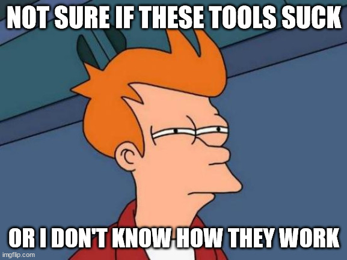
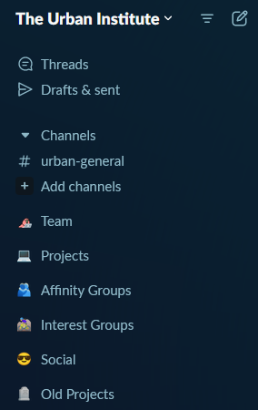
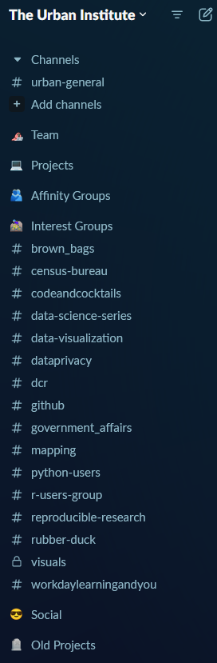
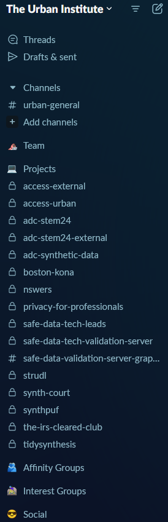
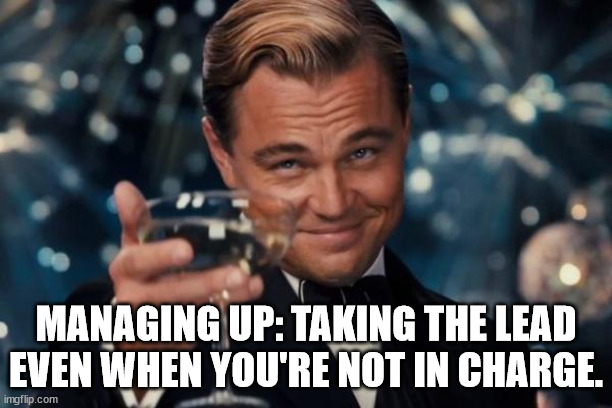
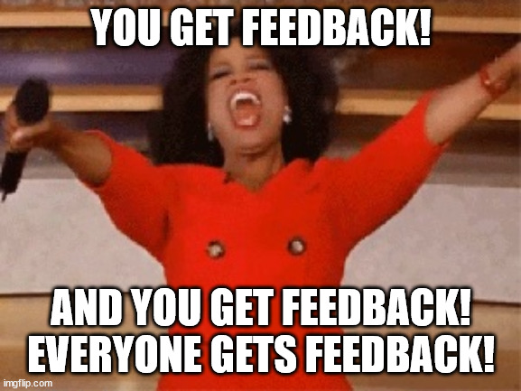

15 Communication, Collaboration, and Culture
The following are questions I received from students in our first class.
15.1 Collaboration
15.1.1 Slack, Teams, Discord, oh my! How and when to use other communication platforms?

I use messaging platforms like Slack, Teams, and Discord (yes, I use all three) for real-time messaging and file sharing. They help organize informal conversations through threads and manage projects effectively. Some examples of how I use these platforms include channels for:
- subteams
- individual projects
- common interests on a topic or tool
- social (e.g., cats, great outdoors)



15.1.2 Collaboration and interpersonal skills generally
The best advice I can give on this topic is to be empathetic, listen to others, and always thank people for their efforts. These three actions significantly enhance collaboration and rapport among your colleagues.
15.1.3 How to take initiative in decision-making and leadership
If you are more junior, there is a concept called managing up. It involves taking initiative and seeking confirmation from those in charge. For example, “I think it would be a good idea to reach out to X to fund our project. Do you think Y would be a good approach, or do you have other thoughts?” Doing this enough will show your initiative and leadership (assuming you have good managers).

Another way to build your leadership skills is by getting involved in professional societies. My involvement in the American Statistical Association allowed me to grow my leadership and management skills in a low-stakes environment (and honestly, one where it’s easy to stand out) and expand my professional network. Be cautious of overcommitting to service commitments since it’s volunteer work and doesn’t directly impact your job. Don’t burn yourself out on service activities.
15.1.4 How to get feedback
Here are some tips I found helpful during “Feedback February” at work.

There are several ways to ask for feedback, including formal check-ins with peers or supervisors and performance evaluations. Beyond these, consider the following:
- Proactively ask for feedback. When was the last time you did so? How often do you do it?
- Show what you do with feedback. Communicating that you’ve heard someone, confirming you understood correctly, and setting an action plan shows that their time spent giving feedback was worthwhile.
- Ask for feedback in alternative ways. Instead of “What can I do better?” ask, “What’s one concrete way I can improve in X?” Give them time to think about this question or use an anonymous form.
- Give yourself feedback. Set a regular reminder to reflect on successes, failures, things that are working well, and things that are not.
- Establish feedback loops. Consistently doing the previous steps will build positive momentum and make getting feedback easier over time.
When receiving feedback:
- Listen without interrupting or defending.
- Ask questions and request examples to gain a better understanding of the feedback.
- Confirm your understanding by restating what you heard.
- Slow down.
- Take time to breathe.
- Allow for pauses.
- Thank the person for giving feedback, regardless of what it was.
When giving feedback:
- Set an intention for how you’ll approach the conversation.
- Define the desired outcome of the conversation.
- Use your own language.
- Practice ahead of time.
- Slow down.
- Take time to breathe.
- Allow for pauses.
- Don’t personalize the feedback; use SIA (Situation, Impact, Action).
When conducting a project, plan a time to reflect either at major milestones or at the project’s conclusion. There are always lessons to learn. Consider these questions:
- What were some successes of the project?
- What could have gone better?
- How effective was our internal team communication?
15.1.5 How to network
Me before meeting people.
As a first step, have a specific goal in mind when attending a networking event. Simply stating, “The goal is to network,” isn’t narrow enough. Are you hoping to make more contacts within a certain industry? Build better relationships with people at an agency? Identify potential funders for a project? Having a clear goal will guide your interactions.
Be ready with your elevator pitch. Yes, it’s cliché, but knowing how to introduce yourself is important. Have 3-second, 10-second, and 30-second versions ready because you never know how much time you’ll have.
For example, here are mine:
- Claire McKay Bowen, Senior Fellow at the Urban Institute. I work in data privacy.
- Claire McKay Bowen, Senior Fellow at the Urban Institute. I develop and evaluate various statistical data privacy methods for evidence-based policymaking.
- Claire McKay Bowen, Senior Fellow at the Urban Institute. I focus on developing technical and policy solutions to safely expand access to confidential data for advancing evidence-based policymaking. I am also interested in improving science communication and integrating data equity into the data privacy process.
Next, be prepared to follow up or reconnect. Have a card or LinkedIn QR code ready to exchange information.
15.2 Difficult conversations
15.2.1 How can you raise a concern about a certain subject?
If the feedback or topic you want to raise is sensitive or difficult, follow the (Situation, Behavior, Impact) + (Question, Recommendation) model.
- Situation: Describe the situation where the observed behavior happened. The more specific and object you can be about where and when, the better.
- Effective Feedback is being specific and timely.
- Behavior: Use objective observations to describe the behavior for which you are providing feedback. Avoid using assumptions, character judgements, personality traits, or generalizations.
- Effective Feedback is appropriate and objective.
- Impact: Describe the impact the cited behavior had on the project, team, or individual performance.
- Effective Feedback is positively intended and nonjudgmental.
- Question: Offer the receiver the opportunity to engage in their own development by asking open-ended questions that encourage reflection and collaboration
- Effective Feedback is collaborative and forward-focused.
- Recommendation: Discuss what the receiver can do to best apply the feedback in the future to achieve the desired results. Remember to factor in their own input from the previous step when making your recommendations.
- Effective Feedback is collaborative and forward-focused.
In addition to this framework, make sure to choose an appropriate time and place for the conversation.
Always give the other person an opportunity to explain their viewpoint or perspective on the situation. You may learn new information that provides further context and helps explain why the situation has become difficult.
15.2.2 How can you properly disagree?
It’s okay to disagree, but disregarding someone’s viewpoint entirely can be upsetting. Start by acknowledging their perspective and explaining why you understand that stance. Then, calmly state your disagreement, using non-confrontational language. Provide reasons and evidence to support your viewpoint, suggest a middle ground, and ask for their input. For example, you might say, “I understand why you want to take X approach, but, given the current constraints, we need to consider a modified approach, such as Y. What are your thoughts on this?”
When you start by acknowledging their perspective before disagreeing.
15.2.3 How can you send follow-up emails on time-sensitive items without sounding annoyed or aggressive?

While sending reminders might feel like pestering, most people appreciate them. The tone and structure of your reminder are crucial. Use the format we covered in week 2 on written and verbal communication skills:
- The punchline: status update
- Outstanding items
- Forward momentum
Be empathetic in your email. Acknowledge potential delays or lost communication and offer assistance if needed. Thank the recipient for their attention.
Hi John,
I hope you are doing well and enjoyed your PTO!
I’m following up on my question about how to adjust my slides to stay within the time limit while providing enough content for the COMPANY audience. I’ve never attended a COMPANY event, which is why I’m asking these questions.
Thank you again for your guidance!
Claire
Hi Lily,
Just checking in regarding the status of our X document copyedit. We know things can get busy, especially for COMMS, so if you’re feeling overwhelmed, do you think it would be helpful for us to reach out to someone else at COMMS for support? Please let us know!
Thank you for your help!
Claire
15.3 Other communication
15.3.1 How can you leave an appropriate voicemail?
Follow the basics we covered in week 2 on written and verbal communication:
- Introduction
- Purpose of your call or email
- Key question
Keep it brief and repeat your callback number twice.
15.3.2 What are some tips for proper over-the-phone etiquette?
Again, follow the basics of:
- Introduction
- Purpose of your call or email
- Key question
Additionally, listen attentively, avoid interrupting, use a friendly and respectful tone, and avoid multitasking during the call. End the call with a courteous closing, such as “Thank you for your time.”
15.3.3 How should you handle greetings and titles in written and verbal communication, such as when someone has a PhD?
It is generally safer to use formal titles unless told otherwise.
Also, women are often referred to as Ms. or Mrs. instead of their formal titles more frequently than men. To avoid irritation, use formal titles when addressing women initially.
For example, while I prefer to be called Claire, I dislike being called Miss Bowen, as I have never been Miss Bowen (married name). In an academic setting, if you’re unsure whether the instructor has a PhD, use Professor.